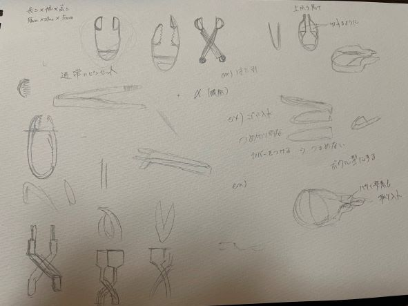
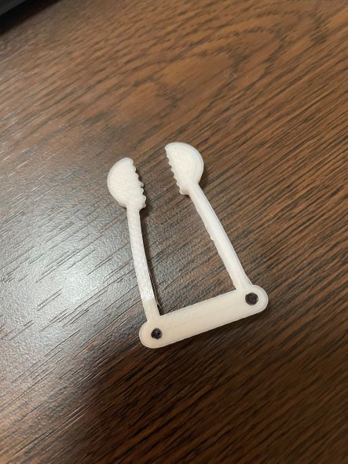

自作ピンセット
１ 作品のタイトル
２ 構想スケッチ

３ 作品画像

４ 設計ファイル
５ 作品の説明
- この作品が従来のピンセットとは異なる点は、先端部分がギザギザになっているということと、クワガタの形をしていると言うことです。
ギザギザにすることで滑りやすい物もしっかりとつかむことが出来る。さらに先端部分を丸くすることでつかみやすくした。
６ なぜこの作品を作成しようと思ったのか
- ピンセットはつかむことにのみ特化している製品なので、その他の使用方法を付与しつつ従来のつかむという機能を強化したピンセットを作成しようと考えた。
構想段階のスケッチにも描かれてあるように、爪切りのようなゴミ箱のような機能を付与しようと思ったが、今回の大きさ的にゴミ箱の機能をつけると従来のピンセットの機能が失われてしまう可能性があったのでやめた。
stlファイルを見てもらえばわかるように、先端部分を空洞化してスコップのような機能を追加した、ピンセットを作成した。この機能を追加した理由としては、例えば魚の骨など深くの骨をつかむ時に身も同時につかむことで奥の骨が取りやすくなるなど、障害物がある時でも奥の物が取りやすくなると感じたからだ。
７ 作成中に参考にした物
８ 作成してみての改善点
- 今回作成している最中に、パソコンの故障により試作を２回しか作成できなかったため、改善点が多く出てきた。
まず後ろの部分を丸くした方が、先端が合わさる面積が多くなり挟みやすくなると感じた。また、今回は暑さの問題で空洞化出来なかったが、先端を球体にして雪玉を作るような機械のようにすると物を救いながら、ピンセットの役割を果たせると感じた。
次回はもう少し試作品を多く作り、こった作品を作っていきたい。